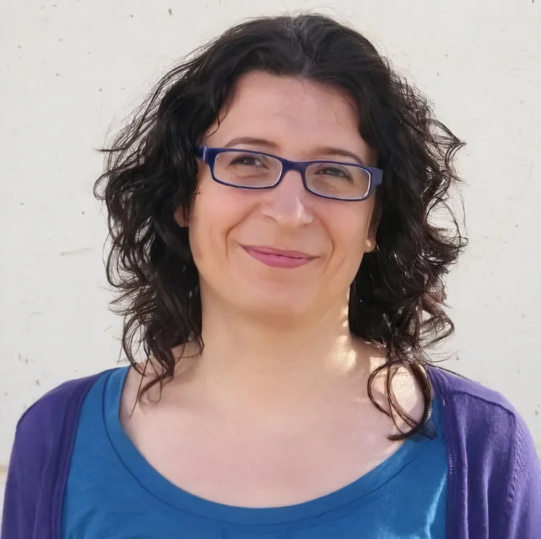
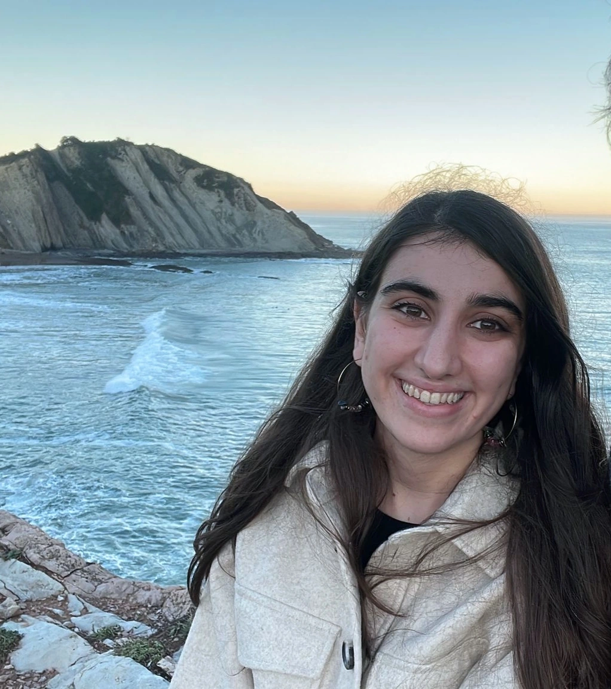
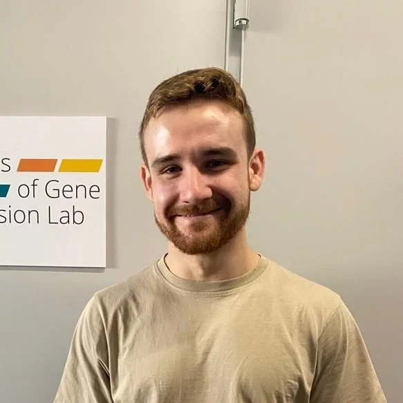

Meet the group
Principal Investigator

Dr. Sonia Tarazona
Statistics Associate Professor
PhD in Statistics | Universitat Politècnica de València (2014)
BS in Statistical Sciences and Techniques | Universitat de València (2001)
BS in Mathematics | Universitat de València (1997)
BS in Statistical Sciences and Techniques | Universitat de València (2001)
BS in Mathematics | Universitat de València (1997)
No matching items
Current Predoctoral Researchers
Roxana Andreea Moldovan
Predoctoral Researcher
MS in Bioinformatics | University of Valencia (2023)
BS in Biochemistry | University of Castilla-La Mancha (2021)
BS in Biochemistry | University of Castilla-La Mancha (2021)
Juan Andrés Tejedor-Serrano
Predoctoral Researcher
MS in Omics Data Analysis & Systems Biology | University of Seville (2024)
BS in Biotechnology | University of Granada (2023)
BS in Biotechnology | University of Granada (2023)

Maider Aguerralde Martin
Predoctoral Researcher
MS in Data Analysis, Process Improvement and Decision Support Engineering | Universitat Politècnica de València (2021)
BS in Mathematics | University of the Basque Country (2019)
BS in Mathematics | University of the Basque Country (2019)
Alejandro Paniagua
Predoctoral Researcher
MS in Bioinformatics | Universitat de València (2022)
BS in Biochemistry | University of Castilla-La Mancha (2020)
BS in Biochemistry | University of Castilla-La Mancha (2020)

Quique Vidal Beneyto
Predoctoral Researcher
MS in Bioinformatics | Universitat Autònoma de Barcelona (2022)
MS in Management and Monitoring of Clinical Trials | TECH University (2023)
BS in Biochemistry and Molecular Biology | Universitat de València (2021)
MS in Management and Monitoring of Clinical Trials | TECH University (2023)
BS in Biochemistry and Molecular Biology | Universitat de València (2021)
No matching items
Former Predoctoral Researchers
| Name | Thesis title | Directors | Institution | Date | Grade |
|---|---|---|---|---|---|
| Zulema Rodríguez Hernández | The role of selenium in type 2 diabetes: an integrative genomic study to inform precision medicine | María Téllez, Sonia Tarazona & Roberto Pastor | Universitat Politècnica de València | 2025 | Cum Laude |
| Pedro Salguero García | Interpretable Survival Analysis for High-Dimensional and Multi-Block data | Sonia Tarazona | Universitat Politècnica de València | 2025 | Cum Laude |
| Ángeles Arzalluz Luque | Understanding isoform expression and alternative splicing biology through single-cell RNAseq | Ana Conesa & Sonia Tarazona | Universitat Politècnica de València | 2024 | Cum Laude |
| Francisco José Pardo Palacios | Long-Read RNA-Seq: Quality control and benchmarking | Ana Conesa & Sonia Tarazona | Universitat Politècnica de València | 2024 | Cum Laude |
| Teresa Soria Comes | Valoración de parámetros celulares y bioquímicos como marcadores de inmunosenescencia y su relación con variables clínicas en pacientes con cáncer de pulmón no microcítico diagnosticados en el Hospital Universitario Doctor Peset | Sonia Tarazona & Inmaculada Maestu | Universitat de València | 2023 | Cum Laude |
| Manuel Ugidos Guerrero | Statistical methods development for the multiomic systems biology | Ana Conesa, Sonia Tarazona & Alberto Ferrer | Universitat Politècnica de València | 2023 | Cum Laude |
| María Teresa Rubio Martínez-Abarca | Multi-omic data integration study of immune system alterations in the development of minimal hepatic encephalopathy in patients with liver cirrhosis | Ana Conesa, Sonia Tarazona & Vicente Felipo | Universitat Politècnica de València | 2022 | Cum Laude |
| Vicente Palomar Abril | Valoración de los parámetros inflamatorios como factores de riesgo independiente para supervivencia en los pacientes con cáncer de pulmón no microcítico localmente avanzado (estadio III) diagnosticados en el Hospital Universitario de Valencia Dr. Peset en el intervalo de tiempo comprendido entre 2010 y 2015 | Sonia Tarazona, Inmaculada Maestu & José López | Universitat de València | 2021 | Cum Laude |
Visiting Researchers
| Name | Position | Institution | Stay |
|---|---|---|---|
| Fernando Naya-Català | Postdoctoral Researcher | IATS-CSIC | Sep 2026 – Nov 2026 |
Collaborators
| Name | Position | Institution | Location |
|---|---|---|---|
| Ana Conesa | Research Professor | Institute for Integrative Systems Biology (I2SysBio, CSIC-UV) | Paterna (Valencia), Spain |
| Jordi Martorell-Marugán | Senior Researcher | Centro de Investigación Príncipe Felipe (CIPF) | Valencia, Spain |
| Ángeles Arzalluz-Luque | Postdoctoral Researcher | Instituto de Neurociencias (CSIC-UMH) | Sant Joan d’Alacant, Spain |
| Carolina Monzó | Postdoctoral Researcher | Institute for Integrative Systems Biology (I2SysBio, CSIC-UV) | Paterna (Valencia), Spain |
| Zulema Rodríguez-Hernández | Postdoctoral Researcher | Universitätsklinikum Freiburg | Freiburg, Germany |
| María Pascual | Associate Professor | Universitat de València | Valencia, Spain |
| Marta Llansola | Researcher | Centro de Investigación Príncipe Felipe | Valencia, Spain |
| Pilar Sepúlveda | Associate Professor | Universitat de València | Valencia, Spain |
| Imelda Ontoria-Oviedo | Researcher | IIS La Fe | Valencia, Spain |